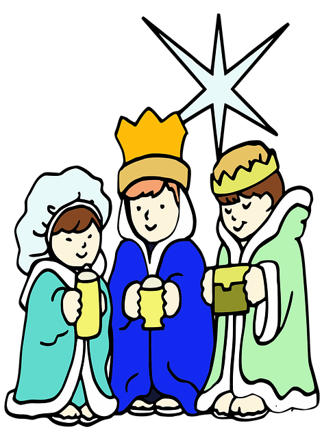
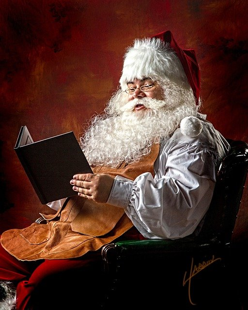

Origem do Natal
O Natal teve origem em festas pagãs que eram realizadas na antiguidade. Nessa data, os romanos celebravam a chegada do inverno (solstício de inverno). Eles cultuavam o Deus Sol (natalis invicti Solis), e ainda realizavam dias de festividades com o intuito de renovação. Outros povos da antiguidade também celebravam a data, seja pela chegada do inverno ou pela passagem do tempo. É o caso dos mesopotâmicos, que celebravam o “Zagmuk”, uma festa pagã em que um homem era escolhido para ser sacrificado. Isso porque eles acreditavam que no final do ano alguns monstros despertavam. A partir do século IV, e com a consolidação do Cristianismo, a festividade foi oficializada como Natale Domini (Natal do Senhor). Como não se sabe ao certo o dia em que Jesus nasceu, essa foi uma forma de cristianizar as festas pagãs romanas, dando-lhes uma nova simbologia. O termo Natal tem origem na palavra do latim “natalis” que, por sua vez, é derivada do verbo nascer (nāscor). A escolha da data foi determinada pelo Papa Julius I (337-352) e, mais tarde, foi declarada feriado nacional pelo Imperador Justiniano, em 529. Deste modo, sem estar associada à sua origem, o Natal passou a ser comemorado em muitos países.

Símbolos do Natal: como surgiram?
Com o Natal surgem vários sinais representativos dessa comemoração festiva, cada qual com um significado distinto e com origem pagã ou religiosa. Quando falamos no nascimento de Jesus, a representação mais presente na nossa cabeça é o presépio, afinal ele retrata o cenário onde o Menino nasceu. E aí, de forma conjunta ou isolada, conhecemos os elementos que nele figuram: a sagrada família, composta por Jesus, José e Maria, os três reis magos, o anjo e a estrela.
Presépio
Você sabia que o primeiro presépio foi montado por São Francisco de Assis? Sim, foi no século XIII, na Itália, que São Francisco quis recriar a cena do nascimento de Jesus para explicar para o povo como teria acontecido. Depois, cada vez mais a montagem do presépio tornou-se uma tradição forte e passou a ser montado nas casas, nas igrejas e em diversos locais durante o ciclo do Natal. O presépio simboliza a união do divino com o terreno, afinal reúne pessoas, animais e a figura de Deus. Ainda no campo religioso, os bonitos anjos usados na decoração do Natal remetem a São Gabriel, o anjo que terá anunciado à Maria que ela seria mãe de Jesus. Os três reis magos são os magos que foram à procura de Jesus para adorá-lo e levar-lhe presentes. Aí está mais uma fator religioso ao lado do costume de dar presentes no Natal, o que faz aumentar o furor do comércio nessa altura do ano. E as estrelas nos topos das árvores de Natal são justamente o sinal seguido pelos reis magos para encontrar o lugar onde Jesus tinha nascido.
Árvore de Natal
A árvore de Natal é um dos símbolos mais emblemáticos da festa. Nem todo mundo monta o presépio, mas a árvore, muita gente tem. A tradição de montá-la, numa proposta religiosa, é mais recente. Foi Martinho Lutero, a principal figura da Reforma Protestante, quem montou a primeira árvore em casa. Antes de Lutero as pessoas já usavam árvores enfeitadas para comemorar a chegada do inverno. É justamente por isso que não se trata de uma árvore qualquer, mas um pinheiro, porque essa árvore é a que mais resiste aos invernos rigorosos. Ela é, portanto, símbolo de esperança e paz, assim como Jesus para os cristãos.
Papai Noel
Se a árvore é o símbolo mais emblemático, o Papai Noel é o personagem mais importante da festa. A figura do Papai Noel é inspirada em um bispo turco chamado São Nicolau. Ele costumava deixar moedas próximas às chaminés das pessoas mais necessitadas. É por isso que ele representa a generosidade que acaba invadindo os corações na época natalina. Com o tempo, e através de campanhas publicitárias, São Nicolau se tornou popular e deu lugar ao aspecto que hoje conhecemos do Papai Noel, que em vez de moedas, deixa presentes às crianças que se portam bem ao longo do ano.
Ceia de Natal
E para finalizar, vamos à ceia! A sua origem vem da Europa, onde as pessoas costumavam deixar a porta das suas casas abertas para receber viajantes. Ela simboliza a união e a confraternização das famílias. Assim, na véspera de Natal, os familiares se reúnem à mesa para a tradicional ceia de Natal. Na cultura brasileira é comum ter o peru de Natal, as frutas secas e o panetone.